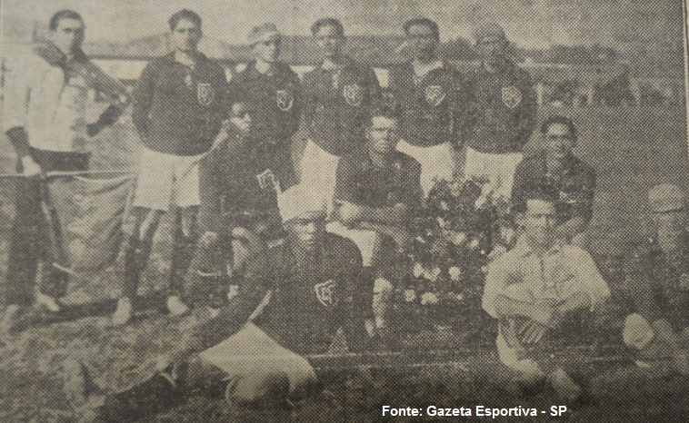
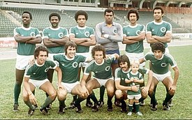
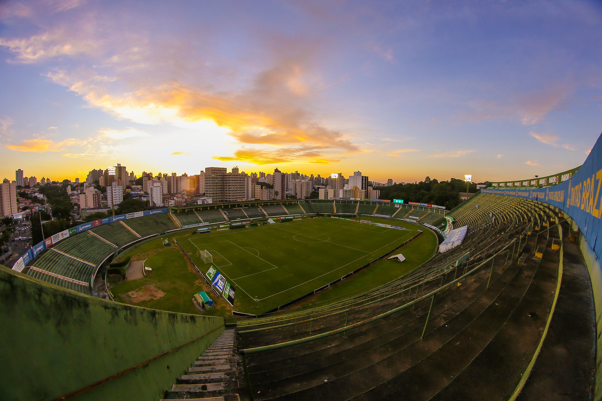

Guarani Futebol Clube

Fundado em 1º de abril de 1911, o Guarani Futebol Clube é um dos mais tradicionais clubes de futebol do interior paulista. Com sede na cidade de Campinas, o Guarani nasceu do esforço de um grupo de jovens que desejavam criar uma equipe que representasse a comunidade local. Ao longo dos anos, o clube construiu uma rica história no cenário nacional e regional, sendo conhecido por sua paixão e dedicação ao esporte. O Guarani ganhou destaque nas décadas de 1970 e 1980, quando conquistou importantes títulos e formou equipes memoráveis. A história do clube é marcada por momentos de glória, desafios e uma relação estreita com sua torcida fiel, que acompanha o time com grande entusiasmo.
O Guarani Futebol Clube possui uma trajetória repleta de conquistas que refletem seu sucesso e importância no futebol brasileiro. Entre os títulos mais notáveis estão o Campeonato Brasileiro da Série A, conquistado em 1978, um marco na história do clube que o colocou no cenário nacional. Além disso, o Guarani venceu o Campeonato Paulista em 1981, reafirmando seu status como uma equipe de destaque no estado de São Paulo. O clube também é conhecido por suas vitórias em torneios regionais e estaduais, o que demonstra sua consistência e habilidade ao longo dos anos.
O Estádio Brinco de Ouro da Princesa, comumente conhecido como Brinco de Ouro, é a casa do Guarani Futebol Clube e um dos símbolos da identidade do clube. Inaugurado em 1953, o estádio tem uma capacidade para aproximadamente 30.000 espectadores, proporcionando um ambiente vibrante e emocionante para os jogos. O Brinco de Ouro é mais do que um simples estádio; é um lugar carregado de história e memória para a torcida do Guarani, que vive momentos inesquecíveis em suas arquibancadas. A estrutura do estádio passou por diversas reformas ao longo dos anos para atender às necessidades modernas e garantir o conforto dos torcedores.
O mascote do Guarani Futebol Clube é o Bugre, uma figura carismática e representativa que simboliza o espírito e a cultura do clube. O Bugre é inspirado nos índios guaranis, uma referência à origem do nome do clube e à história da região. Este mascote é uma parte importante da identidade do Guarani, aparecendo em eventos, celebrações e em materiais promocionais. Com seu visual marcante e sua presença vibrante, o Bugre contribui para criar uma atmosfera única nos jogos e fortalecer a conexão entre o clube e seus torcedores.

O Guarani Futebol Clube é mais do que um time; é uma verdadeira instituição que representa a paixão, a história e a identidade de Campinas e da região. Com uma trajetória rica em conquistas e desafios, o clube continua a inspirar e a emocionar seus torcedores a cada temporada. O Estádio Brinco de Ouro da Princesa e o mascote Bugre são símbolos importantes que reforçam a conexão entre o clube e sua fervorosa torcida. Enquanto o Guarani avança para o futuro, sua rica herança e o espírito vibrante de sua comunidade garantem que o legado do clube continuará a brilhar, mantendo viva a tradição e o orgulho de ser um dos grandes do futebol paulista e brasileiro.